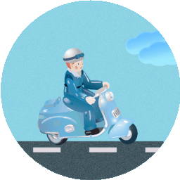
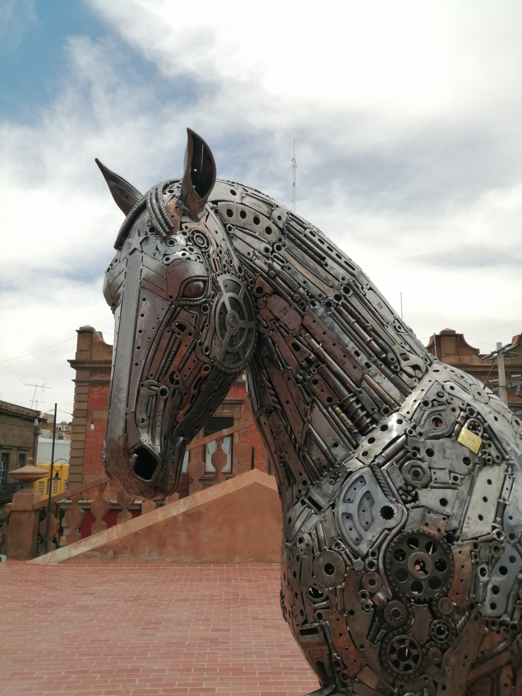
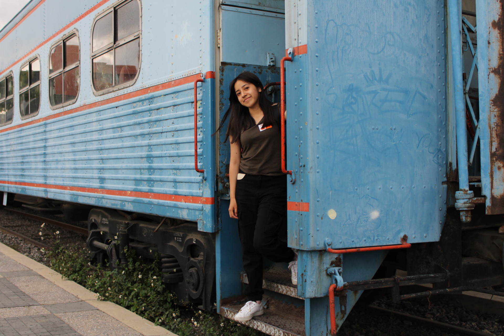

Viaje con destino a San Luis Potosí
El verano pasado lo pasé en San Luis Potosí porque fuimos a visitar a mi hermana, quien es doctora y estaba viviendo allá por su internado médico. Todo empezó porque de por si teníamos una fiesta de Xv de mi prima en Guanajuato por lo que viajariamos a esa parte del país, y estos dos estados están a dos horas de distancia por lo que mi mamá propuso que fueramos a visitar a mi hermana porque además, ella la extrañaba mucho porque tenía varios meses que no la veíamos.Pero la primera parada como ya había mencionado era Guanajuato.

Camino hacia el destino
Tardamos varias horas viajando aunque definitivamente el camino se me hizo más corto que veces anteriores, la parte que siempre se me hace infinita es llegar y pasar Querétaro pero como iba con toda la mi familia paterna, porque todos ibamos a la fiesta, el viaje se hizo más corto. Hubo algunas diferencias porque todos queriamos pasar a Guanajuato centro o a San Miguel de Allende pero mis tíos que eran los organizadores no quisieron porque decían que se haría más tarde y preferían llegar antes al lugar de la fiesta, así que no nos detuvimos hasta nuestro destino. Al día siguiente de la fiesta viaje con mi mamá a SLP, cuando llegamos vimos a mi hermanna quien nos espero en la estación del autobus hicimos más cosas pero no los quiero aburrir cpn eso así que les contaré de los lugares que visitamos.
Conociendo San Luís Potosí
 Al llegar al Centro Histórico de San Luis Potosí, la emoción me invadió. Desde el primer paso en las calles empedradas, me di cuenta de que esta ciudad tiene un encanto especial. La Plaza de Armas, con su vibrante vida, era el corazón de la ciudad. La Catedral Metropolitana, con su imponente fachada de cantera rosa, me dejó sin aliento. Me senté en un banco cercano, disfrutando del ambiente y escuchando a los músicos callejeros que llenaban el aire con melodías cautivadoras.
Decidí que mi primera parada sería el Museo de la Máscara. Al entrar, me sorprendió la diversidad de máscaras que adornaban las paredes. Cada una contaba una historia, reflejando tradiciones de diferentes regiones de México y del mundo. La guía me explicó el simbolismo detrás de muchas de ellas, y me cautivó escuchar cómo las máscaras pueden representar tanto la alegría como la tristeza en las celebraciones. Me animé a probarme una de carnaval; me reí al ver mi reflejo, sintiendo que me conectaba con la festividad.
Después de sumergirme en el mundo de las máscaras, me dirigí al Museo Silva Federico. Este lugar es un verdadero tesoro de arte y cultura. Al recorrer las salas, quedé fascinado por la mezcla de arte clásico y contemporáneo. Las obras de artistas locales y nacionales me hicieron reflexionar sobre la identidad cultural de la región. Pasé un buen rato observando cada pieza, disfrutando del ambiente tranquilo que se respiraba en el museo.
Continué mi recorrido y llegué al Museo del Virreinato. Al entrar, sentí que me transportaba a la época colonial. Las exposiciones sobre la vida en el virreinato eran fascinantes. Me encontré con muebles, pinturas y objetos que habían pertenecido a esa era, y aprendí sobre la historia de San Luis Potosí durante esos años. La información sobre el impacto del virreinato en la cultura y la arquitectura de la ciudad realmente me abrió los ojos.
 Con tanto conocimiento y cultura, decidí que era momento de tomar un descanso. Así que me subí al turibús, que es una excelente manera de explorar la ciudad. Mientras recorríamos las calles, el guía compartió historias sobre los lugares emblemáticos. Me encantó ver las fachadas de los edificios históricos y escuchar sobre la evolución de la ciudad. Cada parada era una nueva oportunidad para admirar la belleza de San Luis Potosí desde otra perspectiva.Después de un recorrido tan enriquecedor, mi estómago comenzó a reclamar atención. Busqué un lugar para comer y encontré una hamburguesería que prometía delicias. Las hamburguesas eran enormes y estaban llenas de sabor; no pude resistirme a probar una con todo: queso, tocino, y una salsa especial que la hacía aún más deliciosa. Mientras disfrutaba de mi comida, me di cuenta de lo bien que se sentía reponer energías en un ambiente relajado y acogedor, rodeado de gente que reía y conversaba.Con la energía renovada, decidí que era hora de regresar al departamento de mi hermana. Sin embargo, como todo buen viaje tiene sus giros inesperados, nos perdimos un poco en el camino. Pensamos que el departamento estaba más lejos de lo que realmente era, y tras un rato de confusión, nos dimos cuenta de que solo nos faltaba una calle. Nos reímos de la situación, disfrutando del momento y de la compañía mientras caminábamos hacia nuestro destino.
Con tanto conocimiento y cultura, decidí que era momento de tomar un descanso. Así que me subí al turibús, que es una excelente manera de explorar la ciudad. Mientras recorríamos las calles, el guía compartió historias sobre los lugares emblemáticos. Me encantó ver las fachadas de los edificios históricos y escuchar sobre la evolución de la ciudad. Cada parada era una nueva oportunidad para admirar la belleza de San Luis Potosí desde otra perspectiva.Después de un recorrido tan enriquecedor, mi estómago comenzó a reclamar atención. Busqué un lugar para comer y encontré una hamburguesería que prometía delicias. Las hamburguesas eran enormes y estaban llenas de sabor; no pude resistirme a probar una con todo: queso, tocino, y una salsa especial que la hacía aún más deliciosa. Mientras disfrutaba de mi comida, me di cuenta de lo bien que se sentía reponer energías en un ambiente relajado y acogedor, rodeado de gente que reía y conversaba.Con la energía renovada, decidí que era hora de regresar al departamento de mi hermana. Sin embargo, como todo buen viaje tiene sus giros inesperados, nos perdimos un poco en el camino. Pensamos que el departamento estaba más lejos de lo que realmente era, y tras un rato de confusión, nos dimos cuenta de que solo nos faltaba una calle. Nos reímos de la situación, disfrutando del momento y de la compañía mientras caminábamos hacia nuestro destino.
Los atardeceres más bónitos
Quedé absolutamente maravillada con los atardeceres de San Luis Potosí. Los colores que pintaban el cielo eran simplemente espectaculares, con tonos cálidos de naranja, rosa y dorado que se mezclaban en una paleta vibrante y mágica. Cada atardecer parecía un cuadro en constante transformación, y me sentí afortunada de poder contemplar esa belleza. En comparación con los atardeceres de Puebla, los de San Luis Potosí tenían una intensidad y una luminosidad que me dejaron sin palabras, convirtiendo cada momento en una experiencia verdaderamente única y memorable.
Planeando el regreso: Avión o autobus
Mientras estábamos en el departamento, empezamos a discutir cómo regresar a casa. Teníamos dos opciones: tomar un autobús o volar, y dado que al día siguiente era mi cumpleaños, queríamos asegurarnos de llegar a la mañana para comenzar las celebraciones. Miramos los precios de los boletos de avión y, para nuestra sorpresa, resultaron ser bastante altos. Después de sopesar las opciones, decidimos que lo más conveniente sería viajar en autobús. Era más económico y nos permitiría disfrutar del paisaje durante el trayecto. Planificamos salir en la madrugada del día de mi cumpleaños, lo que nos daba tiempo para descansar un poco antes del viaje. Pero eso no significaba que nos detendríamos; el día anterior aún teníamos muchas cosas por hacer y lugares por visitar en San Luis Potosí. La emoción de aprovechar nuestro último día al máximo nos llenó de energía, y acordamos que, en una próxima visita, definitivamente querríamos volar para hacerlo más rápido y cómodo, especialmente si el presupuesto lo permitía.
Última parada: Museo del ferrocarril Jesús García
Al llegar al Museo de Ferrocarril Jesús García, la emoción me invadió. La fachada del edificio evocaba una época dorada del ferrocarril en México, y la historia parecía palpitar en cada rincón. Al cruzar las puertas, fui recibido por una exposición fascinante que contaba la evolución del ferrocarril en el país.Una de las secciones más impactantes fue la de las locomotoras. Allí, pude ver de cerca una imponente locomotora de vapor, subí a bordo y, por un momento, me imaginé como un viajero del pasado, sintiendo la vibración del tren mientras avanzaba por los campos.Al final de mi visita, no pude evitar sentirme agradecido por la oportunidad de conocer una parte tan vital de la historia mexicana. El museo no solo preserva la memoria del ferrocarril, sino que también rinde homenaje a aquellos que hicieron posible que el tren se convirtiera en un símbolo de progreso.
